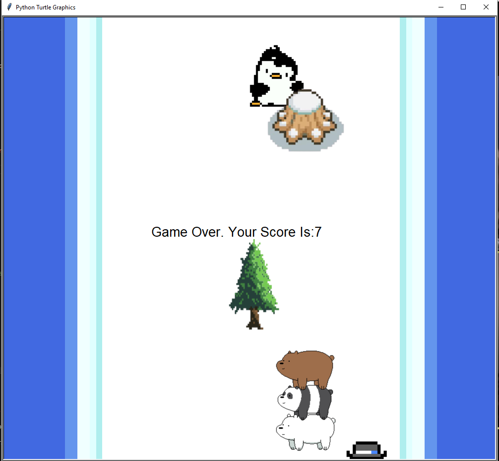

Portfolio
Fish are Friends, not Food
There are a variety of different sizes, colors, and shapes used in the program to make an ocean scenery consisting of sand, water, a crab, a jellyfish, kelp, a rock, an octopus, sunken treasure, and a starfish. To enhance the program, there is movement in the form of floating bubbles and swimming fish. The fish shape changes when moving in different directions or when in contact with the shark. In the process of coding the program, our group used numerous nested loops, conditional statements, and relational statements.

I Made up This Project on the Fly
Click on bugs to stamp a troll face and receive a math question. If you answer the math question correctly, you will receive a point. If you answer the question wrong, then you don't get a point, but you can still keep on playing. There is a timer that counts down from 30 seconds. Once the timer is done, the game is finished and displays the number of correct questions out of total questions. After each fly is clicked, the new fly will go to a new location based on a randomly chosen index.

Pengu Slide
A top to bottom scroller game where you control a penguin and go side to side, dodging osbtacles. The scoring system is based on time alive, and the obstacles speed up over time. When the obstacles reach the top of the page, they reset back down to the bottom at a random x location. We used functions, loops, Python turtle, imported images, and conditional statements to code our program.

Super Mario Platformer
A scratch program that I made based off of the game Mario. The objective is to reach the toilet as mario by moving with the arrow keys. There are 3 levels and a scroller congratulations at the end.